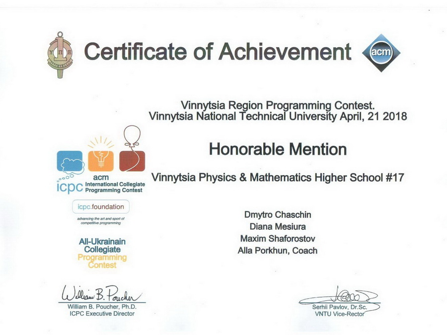

21 квітня 2018 року гімназисти брали участь у Всеукраїнській студентській олімпіаді зі спортивного програмування. Це перший етап до світової першості з програмування АСМ-ІСРС (International Collegiate Programming Contes), започаткованої у 1977 році в США.
У Вінниці змагання відбуваються на двох майданчиках – крім ВНТУ, програмістів приймає державний педагогічний університет імені Коцюбинського.
Шестикласникам нашої гімназії вдалося перевершити 86 команд з коледжів та університетів Вінниці, Хмельницького, Тернополя та Чернівців. Також було помічено, що якби команди виступали від коледжу, вони б отримали як мінімум диплом 3-го ступеня. Гарний результат для дітей 11–12 років, чи не так?

– Умови змагання прості: за мінімум часу розв’язати максимум задач, – розповів координатор олімпіади у Вінницькій області, доцент кафедри комп'ютерних наук ВНТУ, відмінник освіти України Ігор Арсенюк. – У кожній команді по три учасники. Бо це колективна робота. Для кожної команди виділяється один комп’ютер.

Кожній команді пропонували для розв’язання 14 задач. Змагання тривали упродовж п’яти годин. Відповіді оцінює комп’ютер. Це найбільш масові змагання серед студентів. Причому, щороку їх кількість зростає. Наприклад, 21 квітня, за попередніми даними, загалом в Україні стартували приблизно 900 учасників, сто з яких учні коледжів і шкіл, інші – студенти вишів.
Загалом на майданчику ВНТУ змагалися 78 команд. Найбільше традиційно представлені господарі змагань – від ВНТУ беруть участь 57 команд. Вперше на олімпіаду прибули команди з Донецького національного університету імені Василя Стуса. Вінницький коледж Національного університету харчових технологій делегував три команди, Вінницький технологічний коледж – дві.
Серед учнівської ліги участь беруть дев’ять команд фізико-математичної гімназії №17, дві з них з 6-го класу.
Команда «M`9ch» у складі Рейда Микола (6–Б), Просянніков Дмитро (6–А) та Сугак Патрік (6–Б) повністю розв'язала 4-и задачі з 14-ти запропонованих. Це дало змогу бути 24-ою командою з 37-и «шкільного» дивізіону олімпіади й 117-ою серед 220-и команд у загальному рейтингу по Південно-Західному регіону України.


Команда «Metamorphoses» у складі Чащін Дмитро (6-Б), Шафоростов Максим (6-Б) та Месюра Діана (6-В) також розв'язали на повний бал 4-и задачі та були на 26-ій позиції у «шкільному» рейтингу та 121-ій позиції у загальному рейтингу по Південно-Західному регіону України.
Джерела: